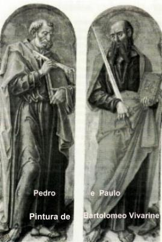
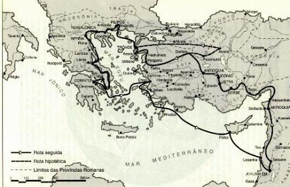
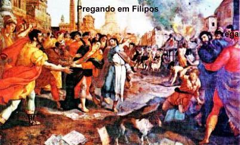
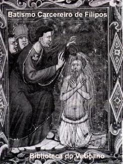
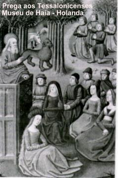
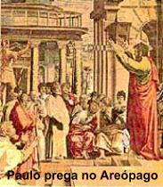
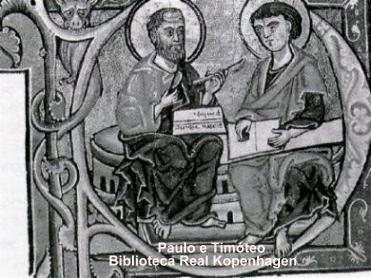
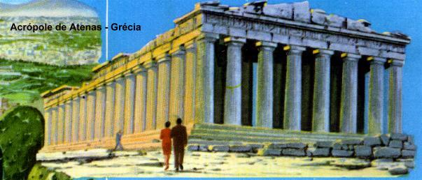

CONCÍLIO DE JERUSALÉM
No ano 49, Paulo
subiu a Jerusalém para participar do Concílio Apostólico, 
Na religião judaica não existe batismo, mas uma Aliança que DEUS JAVÉ fez com o povo israelita no Monte Sinai-Horeb. Aquela Aliança passou a ser certificada pela obrigação da circuncisão.
Então estava ocorrendo na Igreja Primitiva um excesso de exigências: israelitas, gregos e pagãos, para se converterem ao cristianismo eram obrigados a se submeterem aos dois ritos: primeiro eram Batizados (por imersão na Água) e depois era feita a Circuncisão (ablação da pele que cobre a glande do pênis) como exigia a Lei mosaica. Este procedimento estava causando um certo mal-estar no povo e Paulo logo percebeu que aquele não era um procedimento correto, porque excedia a exigência da doutrina.
Depois dos argumentos apresentados e discutidos, o Concílio aprovou a resolução de suprimir a “circuncisão” , valendo somente o Sacramento do Batismo para ser Cristão. Desse modo, foi escrito um Documento Conciliar, em que todos assinaram, o qual estabelecia a não obrigatoriedade para ser cristão, de também obedecer as exigências da Lei de Moisés, especialmente a circuncisão. (At 15) e (Gl 2,3-6).
Foi ainda neste Concílio que a Igreja reunida se manifestou oficialmente a respeito de Paulo, reconhecendo a dimensão de seu trabalho e definindo que ele deveria se dedicar a evangelização dos gentios (dos pagãos), recebendo por isso mesmo, o titulo de Apóstolo dos Gentios.
SEGUNDA VIAGEM APOSTÓLICA

Partindo de Icônio, Paulo fez um plano de seguir na direção de Êfeso. Contudo, impelido pelo ESPÍRITO subiu para a Frigia e depois evangelizou a Galácia, onde permaneceu por bom tempo trabalhando e também retido por uma doença. Seguiu com a missão até a Mísia. Tentaram entrar na Bitínia, mas o ESPÍRITO SANTO não permitiu. Então atravessaram a Mísia e desceram a Trôade.
O trabalho de
evangelização seguia firme, apesar das dificuldades que surgiam e 
Certa noite em Trôade teve uma visão: “um macedônio de pé, suplicava-lhe: vêm a Macedônia, socorre-nos!” (At 16,9)
Paulo seguiu viagem diretamente para a Samotrácia e no dia seguinte, para Neápolis, de onde alcançou Filipos, cidade importante da Macedônia. O Apóstolo trabalhou intensamente!
Todavia,
por causa de suas enérgicas pregações, alguns adivinhos que trabalhavam na
região sentiram-se prejudicados, não eram mais procurados com frequência.
Por isso, uniram forças com os judeus e levaram Paulo, Silas, Timóteo e os
cristãos que os seguiam diante do juiz, e inventaram mentiras e fizeram intrigas,
inclusive afirmando que o Apóstolo e seus seguidores além de desordeiros, divulgavam
métodos e práticas que a eles, cidadãos romanos, não era permitido 
O carcereiro trêmulo, lançou-se aos pés de Paulo e Silas e cheio de medo perguntou: “Senhores, que devo fazer para ser salvo?” (At 16,30)
Eles responderam: “Crê no SENHOR JESUS e serás salvo, tu e os teus”. (At 16,31) E em seguida, Paulo anunciou-lhe a palavra do SENHOR. O carcereiro levou-os consigo para a sua casa e enquanto lavava e cuidava das suas feridas eles iam evangelizando os seus familiares. Em seguida, pediu para ser batizado, ele e seus parentes receberam o Sacramento do Batismo e depois, voltou para a prisão em companhia de Paulo e Silas.
No dia seguinte cedo,
chegaram emissários do juiz, ordenando que os prisioneiros 
Fatos como este aconteceram com frequência e se constituíam em pesadas cruzes que Paulo e seus companheiros enfrentaram com paciência e dignidade. Ele feliz por ter cumprido a sua missão, com um sorriso de alegria no coração lembrava-se das palavras de JESUS: “EU Mesmo lhe mostrarei o quanto lhe será preciso sofrer por causa do Meu Nome”. (At 9,16)
Seguiram com a missão para Tessalônica e depois, foram evangelizar a Bereia. Pelos muitos problemas que aconteceram, Paulo foi forçado a fugir escoltado por alguns cristãos até Atenas. Silas e Timóteo viajaram depois e só o encontraram em Atenas no dia seguinte.
Ao caminhar pelas
ruas da cidade, inflama-se de indignação ao observar a cidade cheia de ídolos!
Discutia na Sinagoga com os judeus e com os adoradores de DEUS
e na Ágora (praça grega antiga onde era o mercado). Discutia diariamente
tentando converter a todos que a frequentavam. Alguns filósofos interessados
em conhecer a religião que ele pregava, levaram-no até o Areópago (Sede do

Entretanto, alguns homens aderiram ao chamado de conversão e abraçaram a fé cristã.
Depois de Atenas, Paulo
e seus companheiros partiram para Corinto. Lá encontrou um judeu chamado Áquila
que acabara de chegar da Itália com sua 
Paulo se despediu de Priscila e de Áquila, e viajou para Éfeso. Seus companheiros Silas e Timóteo seguiram viajem para Antioquia e ele se reteve por alguns dias em Éfeso. Depois viajou para Cesaréia, saudou a Igreja de Jerusalém e retornou a Antioquia, onde permaneceu um tempo necessário.
